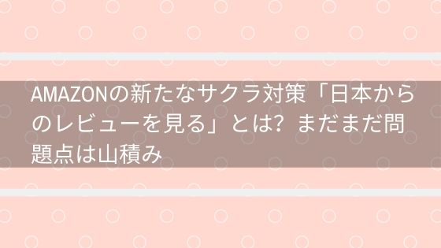
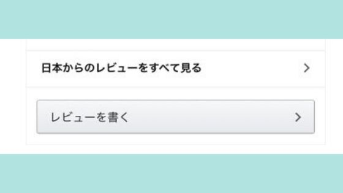
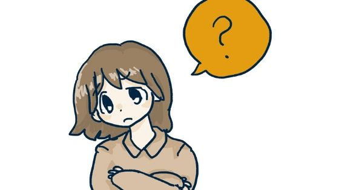

Amazonの新たなサクラ対策「日本からのレビューを見る」とは？まだまだ問題点は山積み
ありがたい対策。でもまだまだ抜け道が・・
2019年12月13日ごろ、Amazonのレビューをすべて見る時のリンクが「すべてのカスタマーレビューを見る」から「日本からのレビューをすべて見る」に変わりました。
※12月19日時点では一部のユーザのみ表示が変わっています。
これは日本国内から投稿されたレビューを表示するためのリンクです。
中国の業者の自演によるサクラ行為を防止するために変更されたとの情報が流れています。

Amazonレビューのサクラや業者の見分け方２つ！これであなたは騙されない
リンク
対策されたならこれで安心だね！
そう言いたいところなのですが実際はそうもいかないのです。
今回は「日本からのレビューをすべて見る」の詳細と残っている問題点について分かりやすく解説いたします。
「日本からのレビューをすべて見る」とは？
冒頭の繰り返しになりますが、日本国内から投稿されたレビューを表示するためのリンクです。
今までは「すべてのカスタマーレビューを見る」となっており、中国からのレビューやアメリカからのレビューなども表示されておりました。
特に中国からのレビューは業者による自演レビューが多く存在しています。
自分で出品した商品に自分が雇った人にレビューを書かせているというものですね。
それが見えなくなるなら、もう騙される心配はなくて安心じゃない？
まだ安心できない理由を次でご説明しますね。
残っている問題点は？
- 日本に住んでいる外国のかたのレビューが表示
- レビュー代行
- レビュー詐欺
大きな問題点はこの３つとなります。
詳しく見ていきますね。
日本に住んでいる外国のかたのレビューが表示
言葉の通り日本に住んでいる外国のかたのレビューが表示されます。
別にそれくらいならいいよね？
それが、全くよくないですよ。
中国の業者の拠点が中国にある場合は問題ないのですが、業者の拠点が日本にもある場合。
日本の拠点からレビューを書けば今まで通り自演できてしまいます。
今までの中国からのレビューは表示されなくなるから意味はあるんだけどね
レビュー代行
レビュー代行とは、商品の出品者が別の業者や個人にお金を払ってレビューさせる行為です。
中国の業者がやっているのは目立つのでわかりますが、日本の業者でもやっているところがあります。
レビュー詐欺
おめでとうございます。デジタル時計が当たりました！
こんな感じで何かものが貰える企画に当選するところから始まります。
そして
- １．まずAmazonで同じ商品を買ってください
- ２．買ったらレビューをお願いします
- ３．レビューのスクリーンショットを送ってください
- ４．レビューが確認できたら買った商品のお金をお渡しします
という手順でレビューを書かせる手法のことをレビュー詐欺と言います。
既に発生しちゃっていますね・・
こちらのアカウントアマゾンの不正レビュープレゼント企画もどきでした。レビューの操作はアマゾンアカウント一発凍結なので注意喚起します！ブロック推奨です🧱#不正レビュー#偽プレゼント企画#拡散希望 pic.twitter.com/YkN58tBKIH
— スポポビッチ (@supopo_bitch) December 19, 2019
問題点はわかったけど対策はないの？
今後「日本からのレビューをすべて見る」がすべてのユーザに実装されるとなると、問題点にあげた
- 日本に住んでいる外国のかたのレビューが表示
- レビュー代行
- レビュー詐欺
の件数が増えていくことが予想されます。
実際にTwitter上では既にレビュー詐欺が何件か起きていました。
買いたい商品のレビューを見るときの対策はこちらの記事で詳しく説明していますが、「サクラチェッカー」がおすすめです。
Amazonレビューのサクラや業者の見分け方２つ！これであなたは騙されない
リンクもう海外のレビューは見れない？
私のAmazonではまだ確認できないのでTwitterでの情報となってしまうのですが、「英国」「アメリカ」のレビューは見ることができるとのことです。
私のアカウントに「日本からのレビューをすべて見る」が追加された場合、ここに情報を追記いたしますね。
ネット上の反応は？
Amazonのサクラレビュー
— 「pcsket」 (@pcsket) December 17, 2019
日本でレビュー済み（日本からのレビューをすべて見る）というのが出来て、変な日本語のレビューは無くなるけど、結局日本人がお金もらってやってるんだったら防ぎようが無い気がする…
なんなら変な日本語レビューがあった方がやらせをしてるんだなとわかっていいと思う pic.twitter.com/R4XDajoAst
"日本からのレビュー"もあまり信用ならんね🙎🏻♀️ pic.twitter.com/fJhxDsCDP5
— Negami (@djnegami) December 19, 2019
アマゾンのレビューが
— ぴ (@kurorin10271027) December 14, 2019
日本からのだけ見られるようになってる
今までなかったよーな？
これは良い
(・∀・) pic.twitter.com/EdaJDzJqF0
あれ？amazonの商品コメント「すべてのレビューを見る(確かこう)」から「日本からのレビューを全て見る」に変わってる。変な日本語多かったもんね。これで嘘レビュー全て解決するとは思えないけどとりあえず階段一歩…だな。
— キノ (@zaxfvx) December 14, 2019
賛否両論ですが、結局信用できないって意見やいたちごっこでは？との意見が多く見られました。
個人的な意見ですが、やらないよりはやるほうがいいですよね。
何も対策せず放置していてもサクラが蔓延するだけなので、少しでもサクラを減らすこの対策はいいのでは？と思います。
まとめ
Amazonレビューのサクラ問題。
Amazonが対策に乗り出してくれていることに少し安心しました。
それでもやっぱり問題はあって、業者側も新たな作戦に出てくるので、自分の目で見極めるというのは重要になります。
少しでも気持ちの良い買い物を出来る手助けになれたのであれば幸いです。
それではよいお買い物を。

amazonプライム会員の特典は何？家族で共有もできます
リンク